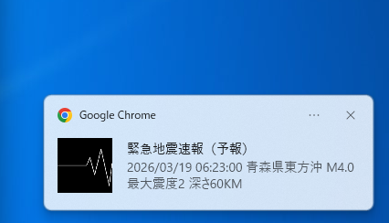
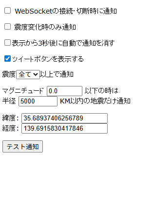
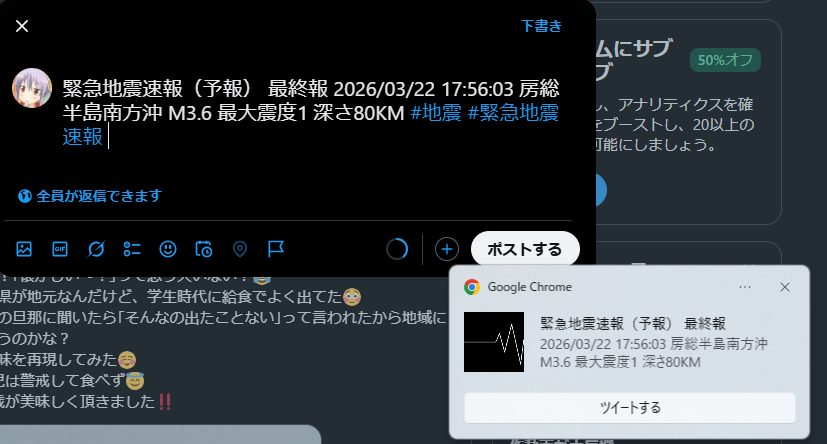

緊急地震速報を受信・通知する拡張機能です。 リアルタイムで緊急地震速報を受信し、デスクトップ上に通知します。
拡張機能のインストールはchromeウェブストアのページから行います。インストールが完了すると自動で実行されます。
ブラウザ画面内右上の←のアイコンをクリックして、必要に応じてピン留めしてください。

緊急地震速報が発表されると↑のような通知画面がウィンドウ内に表示されます。クリックすると消えます。
通常状態
何も起こってないときはこの色です。
緊急地震速報発表時
発表から1分間点滅を繰り返します。
エラー発生時
WebSocketが切断された時やエラーが発生したときはこの色になります。拡張機能をリロードすることでエラーが解消されることがあります。

拡張機能のアイコンをクリックすると設定ウィンドウが開きます。
「表示から3秒後に自動で通知を消す」の項目にチェックを入れると自動で通知が消えます。通知センターに通知を残したくない場合におすすめです。

「ツイートボタンを表示する」にチェックを入れると、通知に「ツイートする」と書かれたボタンが追加されます。そこをクリックするとTwitterのツイート画面に飛びます。